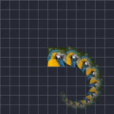

Ripetitore

Genera dinamicamente più copie del livello.
Ripeti crea copie del livello, una dopo l'altra. Numero è il numero di copie, Scostamento quanto ogni copia si sposta rispetto alla precedente, Angolo e Scala come ruota e cresce ciascuna, e Tempo ritarda ogni copia così seguono il livello come una scia. Per altre disposizioni vedi Ripetizione lineare, Ripetizione radiale e Ripetizione griglia.
Impostazioni
| Impostazione | Tipo | Intervallo | Predefinito |
|---|---|---|---|
| Numero | Numero | Da 0 a 9999 | 10 |
| Tempo | Numero | Da 0 a 9999 | 0 |
| Scostamento | Punto (X, Y) | Da -99999 a 99999 | 0, 0 |
| Angolo | Angolo | Da -3600° a 3600° | 0° |
| Scala | Numero | Da 0 a 10 | 1 |
| Alfa | Numero | Da 0% a 100% | 100% |